B · Gemeinsame Roboteranleitung · Deutsch
PuduBot 2: Automatische Tordurchfahrt einrichten und testen
Nach dem geprüften elektrischen Anschluss: Bluetooth-Verbindung testen, die Kartenbearbeitung öffnen, das Tormodul binden und beide Durchfahrtsrichtungen prüfen.
Einstellung und Fehlerbehebung öffnen
Beginnen Sie nach der elektrischen Prüfung gemäß der passenden Anschlussvariante A. Das Tormodul ist versorgt; die Torbewegung ist für den Test freigegeben.

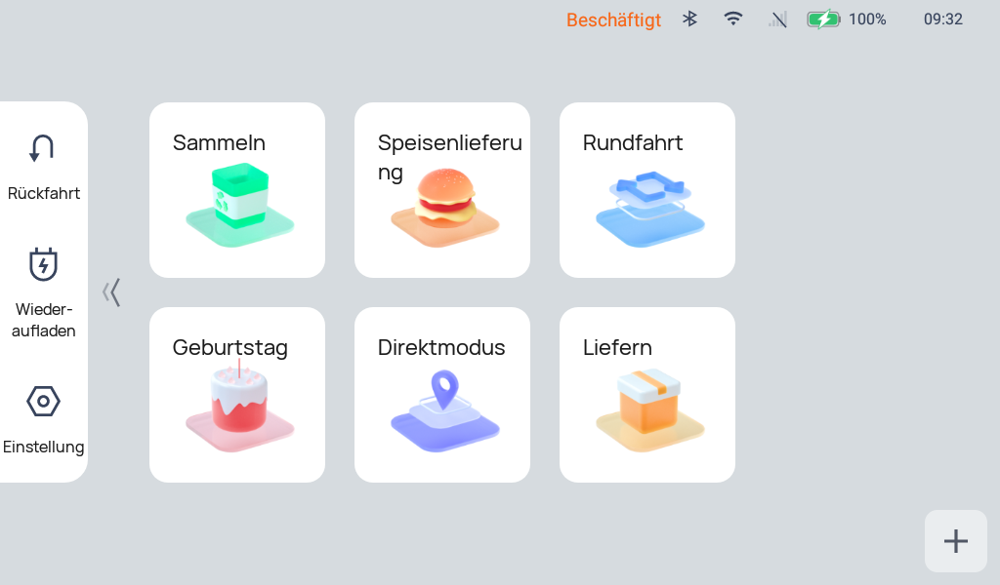

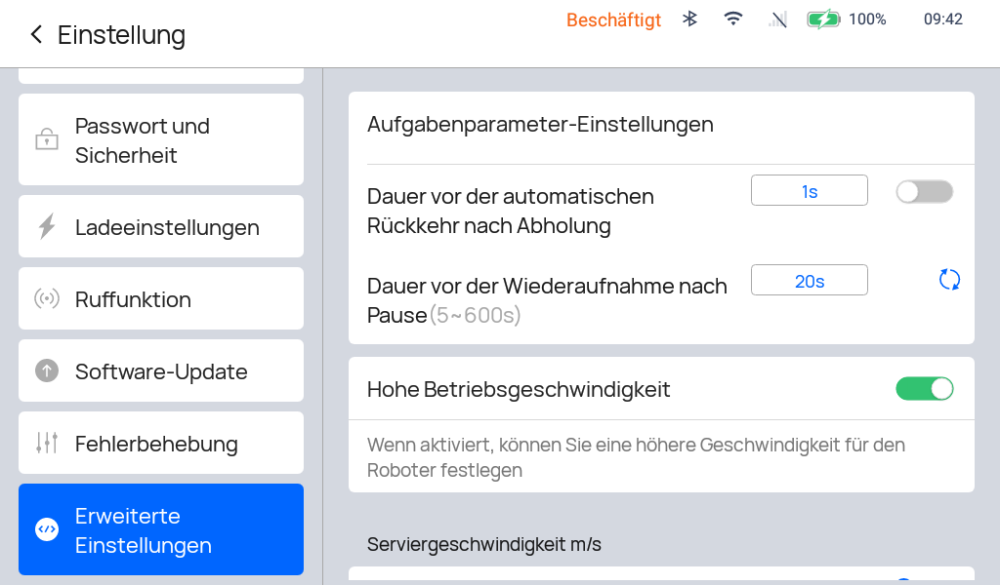
- Einstellung öffnen. Auf der Startseite links auf das Zahnrad bzw. Einstellung tippen. Falls ein Kennwort abgefragt wird, den bereitgestellten Zugang verwenden.
- Zu Fehlerbehebung scrollen. In der linken Einstellungsliste nach unten scrollen und Fehlerbehebung auswählen.
- Servicemenü aufrufen. Mit dem bereitgestellten Servicezugang fortfahren, falls eine Abfrage erscheint. Die technische Menüansicht des Referenzgeräts heißt Testen.
IoT-Konfiguration und Tortest aufrufen
Menüfolge: Testen → Module Jump → IOT Configuration → Gate test.

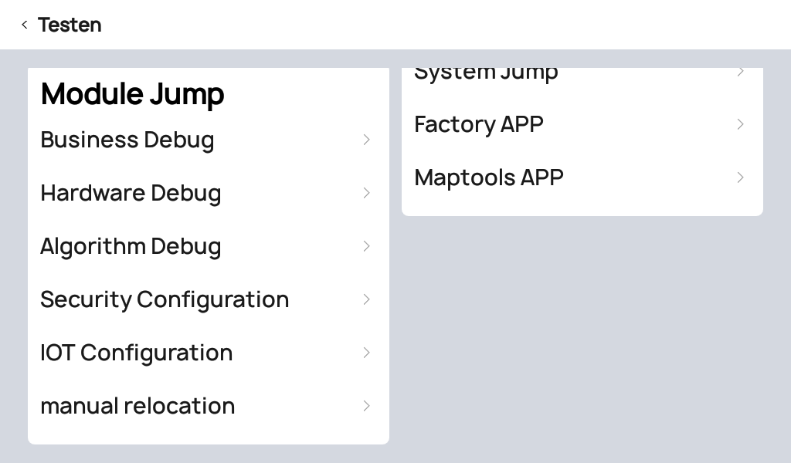
1 · IOT Configuration unter Module Jump antippen.

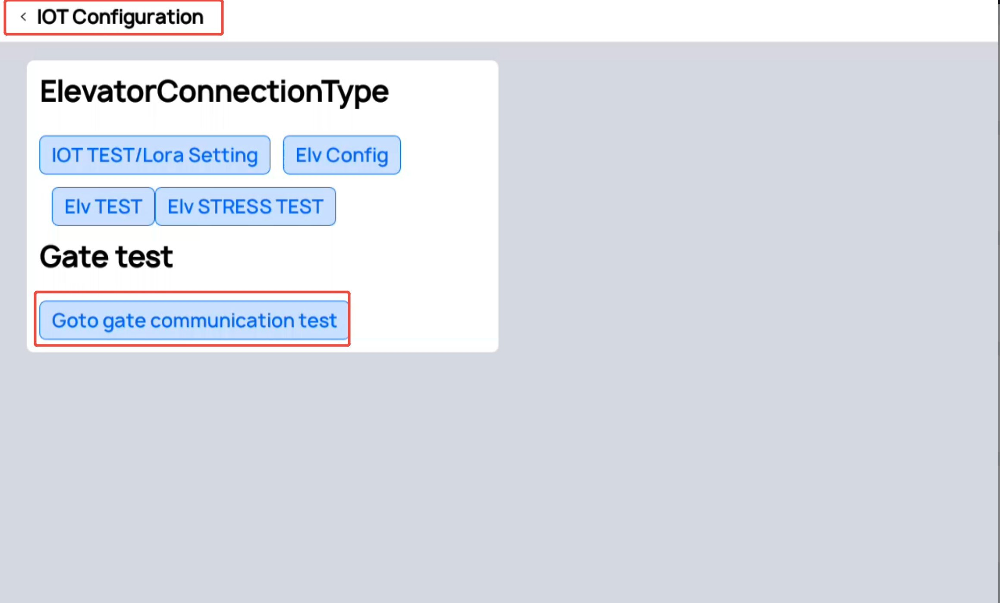
2 · Goto gate communication test im Abschnitt Gate test betätigen. Die Aufzug-Testfunktionen oberhalb gehören zu einer anderen IoT-Funktion.
Das richtige Tormodul suchen und verbinden
Die DeviceID ist die Bluetooth-MAC des Tormoduls. Für jedes Tor wird die Adresse des dort angeschlossenen Moduls verwendet.

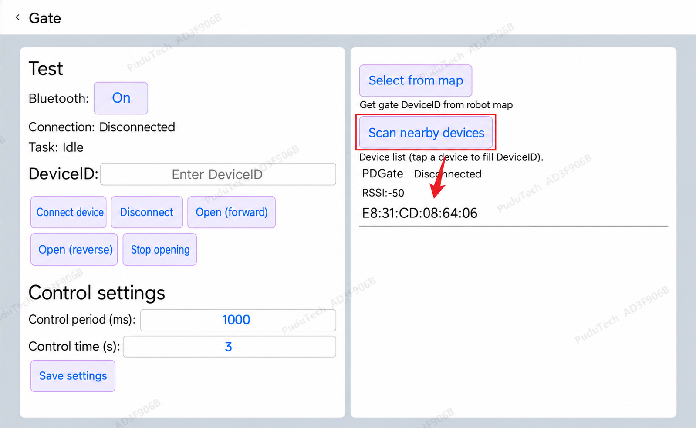
- Bluetooth einschalten. Bei Aus / Off den Schalter betätigen.
- Geräte in der Nähe scannen. Die Gerätesuche starten. In der Liste erscheint ein PUDU-Gate mit MAC-Adresse.
- Richtiges Modul wählen. Den zu diesem Tor gehörenden Eintrag antippen. Adresse mit dem Gehäuseetikett bzw. der ermittelten Modul-MAC abgleichen.
- DeviceID kontrollieren. Die ausgewählte Adresse wird übernommen. Alternativ die bekannte, echte Modul-MAC eingeben.
- Connect device / Verbinden antippen. Erst bei Connected / Verbunden fortfahren.
Die Bluetooth-Verbindung allein erzeugt noch keine dauerhafte Kartenbindung. Connected bestätigt die Funkverbindung und meldet keine Torblattstellung zurück.
Vorwärts und rückwärts einzeln testen
Der Roboter bleibt vor dem Tor stehen. Beobachten Sie bei jedem Befehl die tatsächliche Torreaktion.

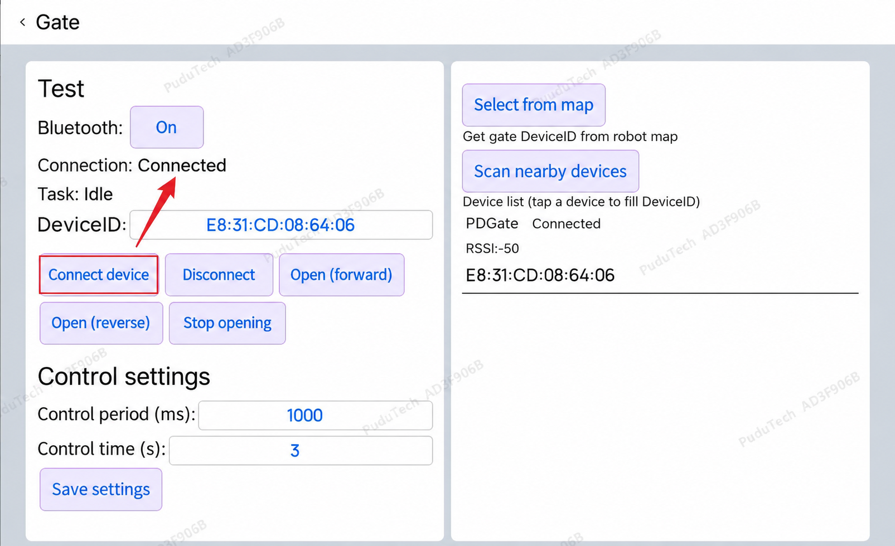
- Status prüfen. Connected / Verbunden muss angezeigt werden; die MAC gehört zum aktuellen Tor.
- Open (forward) / Öffnen vorwärts antippen. Das zugeordnete Tor muss öffnen.
- Stop opening / Öffnen beenden antippen. Damit wird die Anforderung beendet; dies ist kein unmittelbarer Schließbefehl.
- Open (reverse) / Öffnen rückwärts antippen. Dasselbe Tor muss wieder öffnen. Danach erneut Stop opening betätigen.
- Disconnect / Gerät trennen antippen, bevor die automatische Durchfahrt geprüft wird.
Karte und Kartenverwaltung öffnen
Menüfolge: Startseite → Einstellung → Karte → Standortkarte prüfen → Kartenverwaltung.

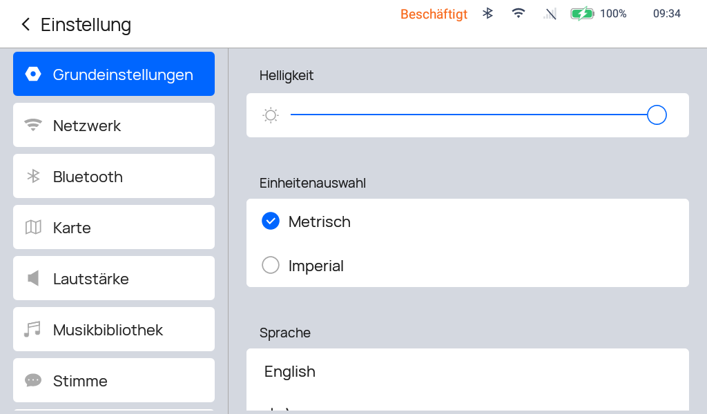

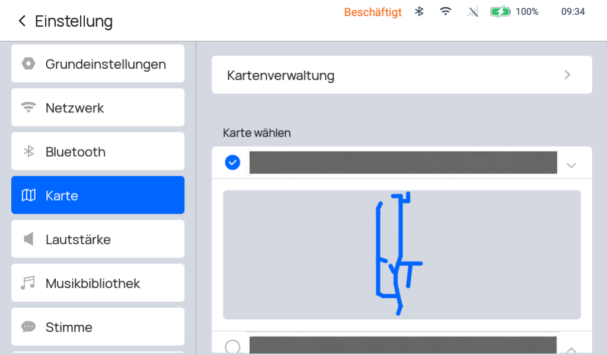
- Einstellung öffnen. Nach dem Tortest die Testverbindung trennen, zur Startseite zurückkehren und Einstellung antippen. Falls nötig, bereitgestelltes Kennwort eingeben.
- Karte auswählen. Links den Eintrag mit dem gefalteten Kartensymbol antippen.
- Standortkarte prüfen. Unter Karte wählen Namen und Kartenstand am eigenen Roboter abgleichen. Der blaue Haken kennzeichnet die ausgewählte Karte.
- Kartenverwaltung oben öffnen. Danach erscheint die Lageplanliste.
Von der Lageplanliste in den Karteneditor
Die vorhandene Betriebskarte bearbeiten. Die Aufnahmen zeigen eine Referenzkarte und geben keine Standortgeometrie für das eigene Tor vor.

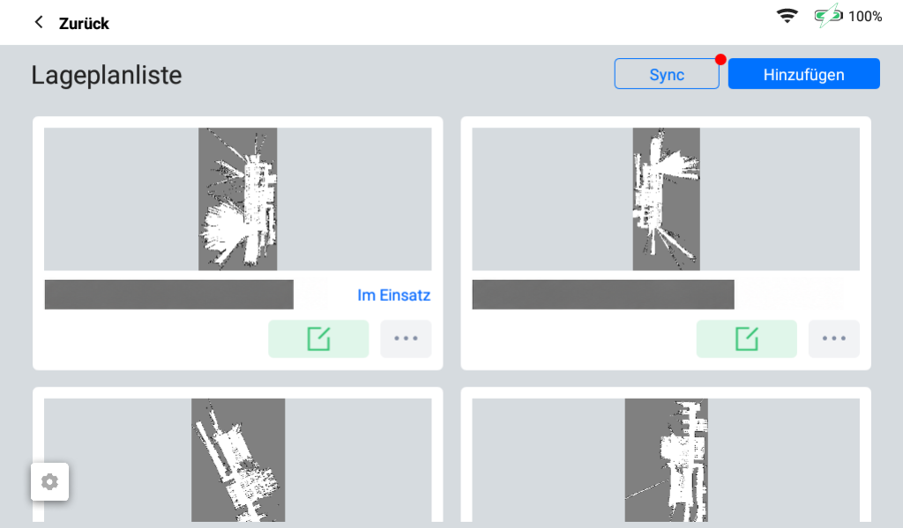
- Karte abgleichen. Im Einsatz kennzeichnet die aktuell verwendete Karte.
- Grünes Stiftsymbol auf der zugehörigen Kartenkarte antippen. Damit die bestehende Standortkarte zum Bearbeiten öffnen.

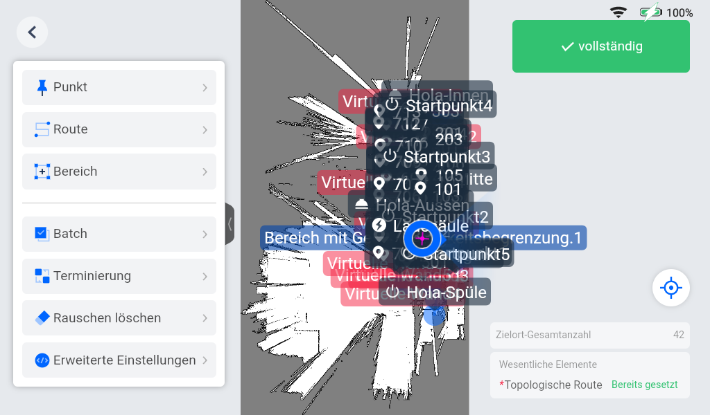
3 · Punkt im linken Menü öffnen und die Funktion zum Hinzufügen eines Punkts aufrufen.
Torpunkt anlegen und ID-Bindung öffnen
Im Menü Punkt die Funktion zum Hinzufügen aufrufen und in der Typenliste Tor wählen.

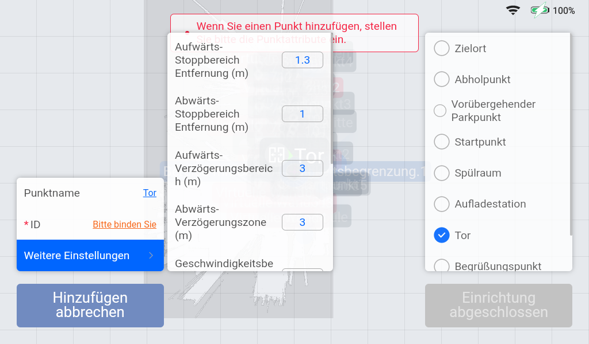
- Punkttyp Tor wählen. Rechts zu Tor scrollen und antippen. Der blaue Haken muss bei diesem Typ stehen.
- Position und Namen festlegen. Tor vollständig öffnen und offenhalten. Den Roboter mittig in der Öffnung und senkrecht zur Torlinie ausrichten. Einen eindeutigen Namen vergeben, etwa Tor_01_Produktion.
- Bitte binden Sie beim Feld ID antippen. Damit wird der Dialog für die Bluetooth-MAC geöffnet.
- Weitere Einstellungen öffnet Stopp- und Annäherungsabstände sowie weitere Torparameter. Auf der Aufnahme ist dieses Fenster bereits geöffnet.
MAC binden und Kartenänderung speichern
Die dauerhafte Modulzuordnung entsteht am Torpunkt. Eine vorherige Bluetooth-Testverbindung ersetzt die ID-Bindung nicht.

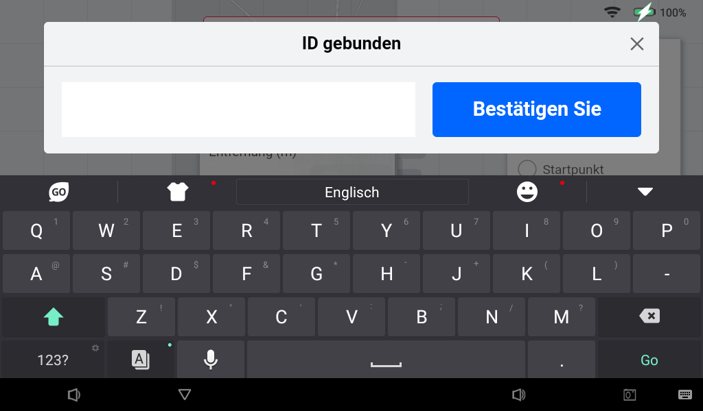
- Echte Modul-MAC eingeben. Die beim Tortest ermittelte Adresse verwenden: sechs Hexadezimal-Paare mit normalen Doppelpunkten, beispielsweise im Format AA:BB:CC:DD:EE:FF. Das Formatbeispiel ist keine echte Moduladresse.
- Bestätigen Sie antippen. Zurück am Torpunkt Namen und zugeordnete ID kontrollieren.
- Punkt und Karte abschließen. Den Torpunkt mit Einrichtung abgeschlossen übernehmen. Danach den Karteneditor mit vollständig abschließen bzw. speichern und die richtige Betriebskarte aktivieren.
- ID zurücklesen. Im Tortest Select from map / Aus Karte auswählen verwenden. Der gewählte Torpunkt muss die zuvor ermittelte Modul-MAC als DeviceID liefern.
Torparameter auf das vorhandene Tor abstimmen
Am Torpunkt Weitere Einstellungen öffnen. Die Zahlen der Referenzaufnahme sind keine fertigen Einstellwerte für ein anderes Tor.
| Feld in der App | Wirkung und Prüfung |
|---|---|
| 1 · Einfahr-Stoppzone Aufwärts-Stoppbereich Entfernung (m) | Abstand vor dem Tor, an dem die Öffnungsanforderung beginnt. Laut Handbuch ist mindestens 1 m wirksam. |
| 2 · Ausfahr-Stoppzone Abwärts-Stoppbereich Entfernung (m) | Anforderung erst nach vollständiger Durchfahrt beenden. Roboter und Ladungsüberstand müssen den Torbereich vollständig verlassen haben. |
| 3 · Annäherungszone Aufwärts-Verzögerungsbereich (m) | Früheres Abbremsen bzw. Verbindungsaufbau. Den Abstand größer als die Einfahr-Stoppzone wählen. |
| Geschwindigkeit Weiter unten im Fenster | Anfahrgeschwindigkeit auf Öffnungszeit und Umgebung abstimmen. |
| Wartezeit Gleiche / Gegenrichtung (s) | Beide Richtungen getrennt prüfen. Bei langsamem Rolltor genügend Zeit bis zur vollständigen Öffnung vorsehen. |
Route durch den richtigen Torpunkt kontrollieren
Menüfolge: Karteneditor → Route → Topologische Route.

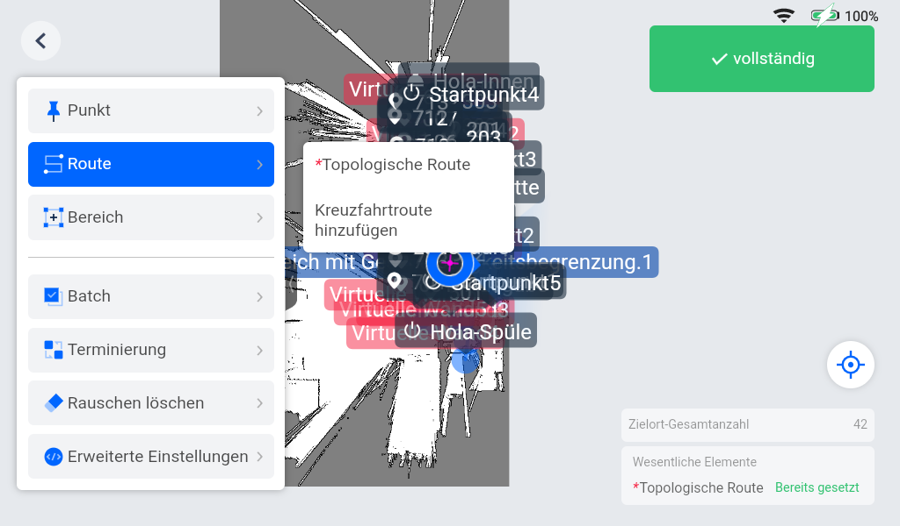
- Route im linken Menü antippen.
- Topologische Route öffnen. Prüfen, dass der Fahrweg durch die richtige Toröffnung und den zugehörigen Torpunkt führt. Änderungen nur an der vorgesehenen Standortkarte vornehmen.

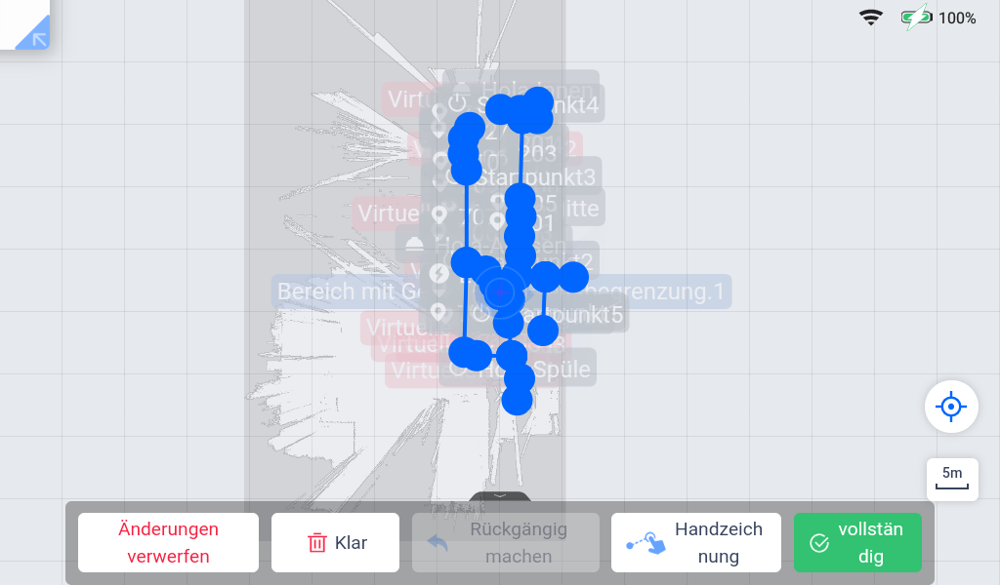
3 · Handzeichnung ist die sichtbare Funktion zum Zeichnen bzw. Anpassen des Fahrwegs. Eine passende vorhandene Route muss nicht neu gezeichnet werden.
4 · vollständig nach einer Änderung betätigen und danach die gesamte Kartenänderung speichern.
Automatische Durchfahrt in beiden Richtungen testen
Für den ersten Fahrtest einen einzelnen Direktauftrag verwenden. Der Zielpunkt liegt vollständig hinter dem Tor.

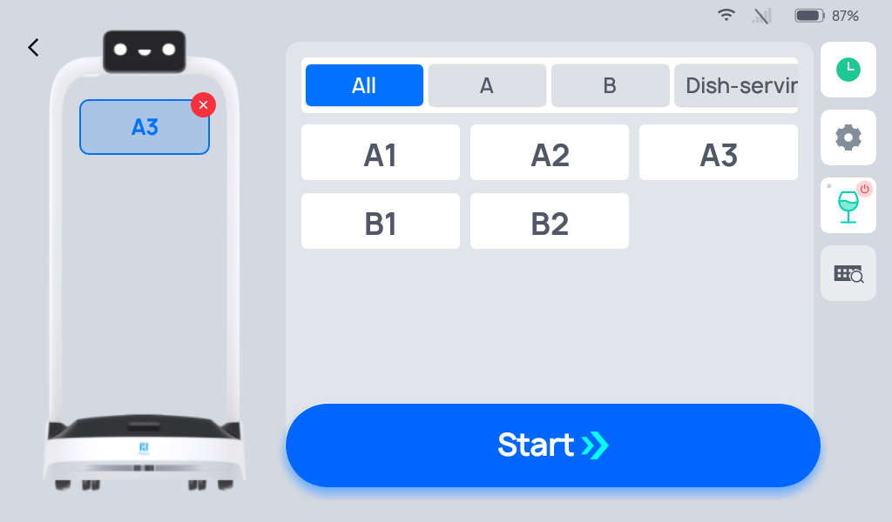
- Testziel wählen. Aktive Testanforderung beenden und Testverbindung trennen. Zur Startseite zurückkehren, Direktmodus öffnen und genau einen Zielpunkt auf der anderen Torseite wählen.
- Start antippen. Der Roboter steht vor dem Tor. Beobachten, ob das Tor rechtzeitig öffnet, der Roboter vollständig durchfährt und die Anforderung erst danach endet.
- Ankunft abschließen. Am Ziel Fertig / Done wählen. Der Einzelauftrag endet dort; für den Rückweg einen neuen Auftrag starten.
- Gegenrichtung prüfen. Im Direktmodus nun ein Ziel auf der ursprünglichen Seite wählen und Start antippen. Dieselben Beobachtungen wiederholen.
Fehler eingrenzen und Einrichtung abschließen
Die Nachweise getrennt betrachten: Bluetooth verbunden, Torpunkt korrekt gebunden und automatische Durchfahrt erfolgreich.
| Beobachtung | In der App kontrollieren | Nächster Schritt |
|---|---|---|
| Kein Modul / Disconnected | Bluetooth eingeschaltet? Gerätesuche neu ausführen; richtige Modul-MAC in DeviceID? | Modulversorgung und Funknähe prüfen; erneut verbinden. |
| Connected, nur eine Richtung öffnet | Beide Öffnungstasten nacheinander auslösen und die Torreaktion je Richtung beobachten. | Öffnungskanäle am Tor prüfen lassen. Kartenänderungen ersetzen den elektrischen Einzeltest nicht. |
| Handtest gut, Fahrtest ohne Toröffnung | Aktive Karte, Torpunktposition und gebundene MAC prüfen. „Aus Karte auswählen“ muss die richtige DeviceID liefern. | Torpunkt/ID korrigieren, Karte speichern und Direktauftrag neu testen. |
| Tor öffnet zu spät / schließt zu früh | Weitere Einstellungen: Einfahr-Stoppzone, Wartezeit je Richtung, Anfahrgeschwindigkeit und Ausfahr-Stoppzone. | Parameter gezielt anpassen und beide Richtungen wiederholen. |
| Fahrweg bleibt blockiert | Torpunkt-Ausrichtung und freien Bereich vor/hinter dem Tor prüfen. Karte auf feste Hindernisse und fehlerhafte Messpunkte prüfen. | Kartenführung berichtigen. Reale Hindernisse nicht durch Kartenlöschen ausblenden. |
Für Änderungen am elektrischen Anschluss zuerst zu A · Elektrischen Anschluss auswählen und vorbereiten wechseln. Danach den Ablauf „PuduBot 2: Automatische Tordurchfahrt einrichten und testen“ erneut für die betroffenen Funktionen durchführen.
Quellen und Abbildungsstand
- PUDU Academy: Bluetooth-Gate Deployment Manual, Archivfassung 18.08.2026, 18 Seiten; insbesondere S. 1, 7–9 und 11–17.
- Tür-/Schrankenhandbuch V3.2, 08.01.2025, S. 11–12; Grundlage der beiden ausdrücklich gekennzeichneten EN-Übersetzungen der Testmasken.
- PuduBot 2 Operation Guide V12.2, Fassung vom 04.03.2026; Abschnitte 3.2.5, 3.3 und 3.3.4 sowie die englische Herstellerabbildung zur Zielauswahl.
- Bereitgestellte Referenzaufnahmen eines deutschsprachigen Roboters. Nur Kartennamen wurden anonymisiert; Kartenbilder, Routen und Punktanzeigen sind entsprechend der Freigabe erhalten. Sie dienen der Bedienorientierung und sind keine Konfiguration für ein anderes Kundentor.
Rote Markierungen und deutsche Erläuterungen wurden ergänzt. Die beiden englisch übersetzten Testansichten sind keine originalen Firmware-Aufnahmen. Die übrigen Herstelleransichten und realen Referenzaufnahmen sind in den jeweiligen Bildunterschriften gekennzeichnet.